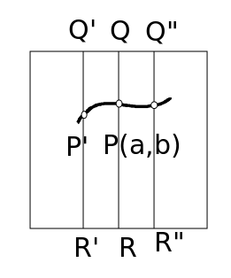

| Choisissez votre langue ! | Choose your language ! |
Le problème
Voici maintenant un théorème extrêmement important. Intuitivement il est assez simple à comprendre, mais sa démonstration présente quelques difficultés techniques.Tout d'abord il met en jeu des fonctions, non pas d'une seule variable x, mais de deux variables réelles x et y. Ensuite on s'intéresse aux 'courbes de niveau' de ces fonctions, c'est à dire aux parties du plan où elles sont constantes. On s'intéresse donc aux sous-ensembles du plan caractérisés par une équation du type f(x,y)=k où k est une constante réelle. On peut d'ailleurs toujours supposer que k=0 en remplaçant au besoin la fonction f:(x,y) → f(x,y) par la fonction g:(x,y) → g(x,y)-k.
Voici quelques exemples simples et connus de tous:
- ax+by+c=0 on obtient alors une droite.
- (x-a)2+(y-b)2-R2=0, le cercle de centre (a,b) et de rayon R.
- x2/a2-y2/b2-1=0, on obtient une hyperbole.
- x2/a2+y2/b2-1=0, on obtient une ellipse
- xy-1=0, encore une hyperbole
Il est facile de fabriquer une fonction de deux variables à partir d'une fonction d'une seule variable. En effet si x → φ(x) est une fonction numérique, la fonction f(x,y)=y-φ(x) est une fonction de deux variables et la courbe de niveau f(x,y)=0 n'est rien d'autre que l'ensemble des points vérifiant y-φ(x)=0, c'est à dire y=φ(x), c'est à dire le de φ.
Dans le cas où f(x,y) peut se mettre sous la forme y-φ(x) on dit qu'on a affaire à une équation 'explicite' c'est à dire que pour la courbe de niveau f(x,y)=0, y peut s'exprimer explicitement en fonction de x.
La question que nous nous posons ici est celle de la réciproque:
Pour une courbe de niveau d'une fonction de deux variables f(x,y)=0 dite équation 'implicite' est-il toujours possible de parvenir à une équation explicite?
Avant d'apporter une réponse (partielle) à ce problème, examinons deux cas particuliers.
Prenons d'abord le cas particulier de la droite ax+by+c=0. On voit que si b≠0 on peut calculer simplement y en fonction de x, on a: y=-(a/b)x-c/b. Mais il est non moins évident que c'est impossible si b=0.
Dans le cas du cercle de centre O et de rayon 1, l'équation x2+y2-1=0 donne y2=1-x2 donc y=+√(1-x2) ou bien y=-√(1-x2). Nous voyons donc qu'ici notre problème de résolution de y en fonction de x possède deux solutions distinctes.
En définitive, selon les cas, notre problème d'écriture explicite d'une variable en fonction de l'autre pour une courbe de niveau d'une fonction de deux variables peut posséder exactement une solution, en posséder deux ou ne pas en posséder du tout.
Nous allons voir que pour peu que la fonction f possède quelques propriétés simples, notre problème possède des solutions au moins locales, c'est à dire que si (a,b) est un point de la courbe de niveau f(x,y)=0, c'est à dire vérifie f(a,b)=0, on peut trouver un voisinage de a dans lequel la résolution explicite de y en fonction de x est possible et est unique. Il reste maintenant à préciser quelles sont ces propriétés.
Le théorème dit des 'fonctions implicites' possède de nombreux énoncés dans des contextes divers. Nous choisissons ici une formulation qui ne fait appel qu'à nos connaissances actuelles sur les fonctions d'une seule variable réelle, il est dû à A.S. Besicovitch rapporté par G.H. hardy (A course of pure mathematics)
Galerie des portaits
The problem
Now here is an extremely important theorem. Intuitively it is quite simple to understand, but its demonstration presents some technical difficulties.First of all, it involves functions, not of a single variable x, but of two real variables x and y. Then we look at the 'level curves' of these functions, ie the parts of the plane where they are constant. We are therefore interested in the subsets of the plane characterized by an equation of the type f(x,y)=k where k is a real constant. We can also always assume that k=0 by replacing, if necessary, the function f:(x,y) → f(x,y) by the function g:(x,y) → g(x,y)-k .
Here are some simple and well-known examples:
- ax+by+c=0 we then obtain a straight line.
- (x-a)2+(y-b)2-R2=0, the circle with center (a,b) and radius R.
- x2/a2-y2/b2-1=0, we get a hyperbole.
- x2/a2+y2/b2-1=0, we get a ellipse
- xy-1=0, another hyperbole
It is easy to make a function of two variables from a function of a single variable. Indeed if x → φ(x) is a numerical function, the function f(x,y)=y-φ(x) is a function of two variables and the level curve f(x,y)=0 n' is nothing but the set of points satisfying y-φ(x)=0, i.e. y=φ(x), i.e. the of φ.
In the case where f(x,y) can be put in the form y-φ(x) we say that we are dealing with an 'explicit' equation, i.e. for the level curve f(x, y)=0, y can be expressed explicitly in terms of x.
The question we are asking here is that of the converse :
For a level curve of a function of two variables f(x,y)=0 called 'implicit' equation is it always possible to arrive at an explicit equation ?
Before providing a (partial) answer to this problem, let's look at two special cases.
Let us first take the particular case of the line ax+by+c=0. We see that if b≠0 we can simply calculate y as a function of x, we have: y=-(a/b)xc/b. But it is no less obvious that it is impossible if b=0.
In the case of the circle with center O and radius 1, the equation x2+y2-1=0 gives y2= 1-x2 so y=+√(1-x2) or y=-√(1-x2). So we see that here our problem of solving y as a function of x has two distinct solutions. level curve of a function of two variables can have exactly one solution, have two or none at all.
We will see that if the function f has some simple properties, our problem has at least local solutions, i.e. if (a,b) is a point on the level curve f(x,y) =0, ie verifies f(a,b)=0, we can find a neighborhood of a in which the explicit resolution of y as a function of x is possible and is unique. It now remains to specify what these properties are.
The so-called 'implicit functions' theorem has many statements in various contexts. We choose here a formulation which calls only on our current knowledge on the functions of only one real variable, it is due to A.S. Besicovitch as reported by G.H. hardy (A course of pure mathematics)
Gallery of portraits
| Abram Besicovitch (1891-1970-RU) | Geoffrey Harold Hardy (1877-1947-UK) |
| http://www-history.mcs.st-andrews.ac.uk/PictDisplay/Besicovitch.html | http://www.twopennies.net/quotes/ |
Le théorème des fonctions implicites
théorème 1
Soit f une fonction de deux variables définie au voisinage d'un point (a,b) sur un 'carré' [a-r,a+r]×[b-r,b+r]. On fait les suppositions suivantes:
- f(a,b)=0
- Pour toute valeur x∈[a-r,a+r] la fonction y →f(x,y) est une fonction continue strictement monotone de y sur [b-r,b+r].
- Pour toute valeur y∈[b-r,b+r] la fonction x → f(x,y) est une fonction continue de x.
theorem 1
Let f be a function of two variables defined in the neighborhood of a point (a,b) on a 'square' [a-r,a+r]×[b-r,b+r]. We make the following assumptions:
- f(a,b)=0
- For any value x∈[a-r,a+r] the function y →f(x,y) is a strictly monotone continuous function from y to [b-r,b+r].
- For any value y∈[b-r,b+r] the function x → f(x,y) is a continuous function of x.
démonstration
Supposons que pour toute valeur x∈[a-r,a+r] la fonction y →f(x,y) est une fonction continue strictement croissante de y sur [b-r,b+r]. Le cas où il s'agit d'une fonction strictement décroissante est parfaitement symétrique.Sur cette figure le point P est le point de coordonnées(a,b) en lequel la fonction f s'annulle. Le point Q est le point de coordonnées (a,b+r), le point R(a,b-r).
On a donc f(Q) > 0 et f(R) < 0 d'après l'hypothèse.

D'après la condition 3. On peut trouver e tels que si Q' et Q" sont à une distance de Q inférieure à e alors f(Q') > 0 et f(Q") > 0.Par ailleurs on peut supposer e suffisamment petit pour que si R' et R" pour que si R' et R" sont à une distance de R inférieure à e, f(R') et f(R") soient < 0.
On suppose donc que Q'(a-e,b+r), Q"(a+e,b+r),R'(a-e,b-r),R"(a+e,b-r) et que f(Q') > 0 f(Q") > 0 f(R') < 0 et f(R") < 0.
En utilisant la condition 2. conjointement avec le théorème des valeurs intermédiaires on voit qu'il existe un point P' du carré d'abscisse a-e tel que f(P')=0.
En outre ce point est unique. En effet l'application y → f(a-e,y) étant strictement croissante elle est injective sur [b-r,b+r], elle ne peut donc avoir deux annulations.
Ce raisonnement vaut non seulement pour le segment [Q'R'] mais pour tout segment d'extrêmités (x,b-r) (x,b+r) où x∈[a-e,a+e]. Si donc on désigne par φ(x) l'ordonnée de l'unique point de ce segment où f s'annule, nous obtenons donc la première partie de notre affirmation.
Il reste à prouver que φ est continue.
Prenons maintenant x0 entre a-e et a+e, et montrons la continuité en x0.
Soit y0=φ(x0), alors f(x0,y0)=0.
Pour tout ε > 0 on a:
f(x0,y0-ε) < 0 < f(x0,y0+ε)
Utilisant la condition 3., c'est à dire la continuité en x0 de x →f(x,y) pour y=y0-ε et y=y0+ε, on voit qu'il existe η > 0 tel que si x∈[x0-η,x0+η] on ait:
f(x,y0-ε) < 0 < f(x,y0+ε)
Mais toujours en vertu de la condition 2. et du théorème des valeurs intermédiaires:
φ(x) se trouve dans l'intervalle ]y0-ε y0+ε[,CQFD.
proof
Suppose that for any value x∈[a-r,a+r] the function y →f(x,y) is a strictly increasing continuous function of y on [b-r,b+r]. The case where it is a strictly decreasing function is perfectly symmetric.On this figure the point P is the point of coordinates (a,b) in which the function f is null. The point Q is the point of coordinates (a,b+r), the point R(a,b-r).
We therefore have f(Q) > 0 and f(R) < 0 according to the hypothesis.
By condition 3. We can find e such that if Q' and Q" are at a distance from Q less than e then f(Q')> 0 and f(Q") > 0.
Furthermore, we can assume e small enough so that if R' and R" so that if R' and R" are at a distance from R less than e, f(R') and f(R") are < 0.
We therefore assume that Q'(a-e,b+r), Q"(a+e,b+r),R'(a-e,b-r),R"(a+e,b-r) and that f(Q') > 0 f(Q") > 0 f(R') < 0 and f(R") < 0.
By using condition 2. together with the intermediate value theorem we see that there exists a point P' of the square of abscissa a-e such that f(P')=0.
Moreover, this point is unique. Indeed the application y → f(a-e,y) being strictly increasing it is injective on [b-r,b+r], so it cannot have two zeros.
This reasoning is valid not only for the segment [Q'R'] but for any segment of extremities (x,b-r) (x,b+r) where x∈[a-e,a+e]. If therefore we denote by φ(x) the ordinate of the unique point of this segment where f vanishes, we therefore obtain the first part of our assertion.
It remains to prove that φ is continuous.
Now take x0 between a-e and a+e, and show the continuity at x0.
Let y0=φ(x0), then f(x0,y0)=0 .
For all ε > 0 we have:
f(x0,y0-ε) < 0 < f(x0,y0 +ε)
Using condition 3., i.e. the continuity at x0 of x →f(x,y) for y=y0-ε and y=y0+ε, we see that there exists η > 0 such that if x∈[x0-η,x 0+η] we have:
f(x,y0-ε) < 0
But still under condition 2. and the intermediate value theorem:
φ(x) is in the range ]y0-ε y0+ε[,QED.
|
Création Gilles Dubois
Created by Gilles Dubois
|
Janvier 2022
January 2022
|
Version mobile Jquery
Mobile Jquery version
|
|